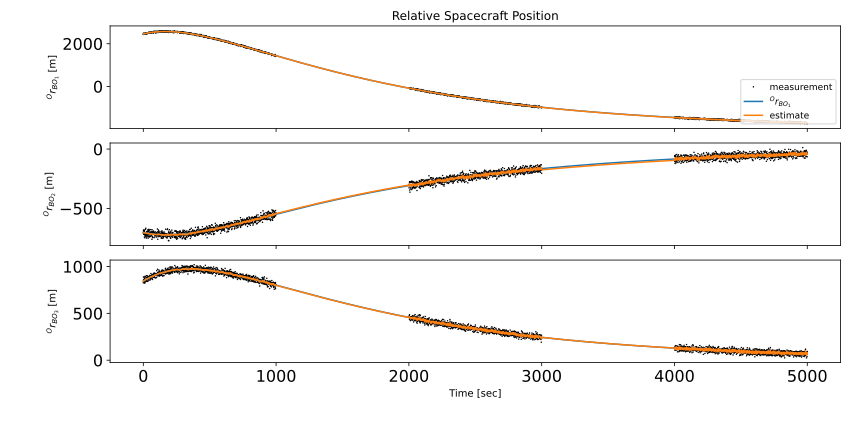
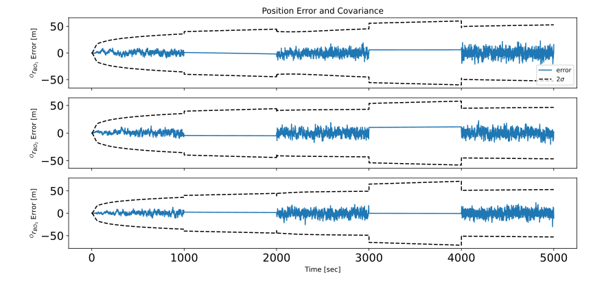
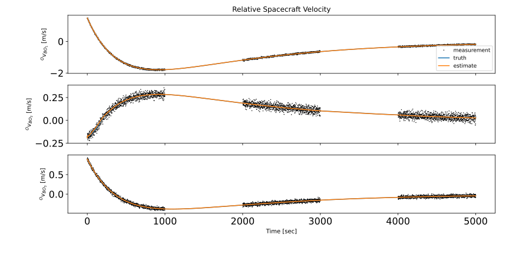
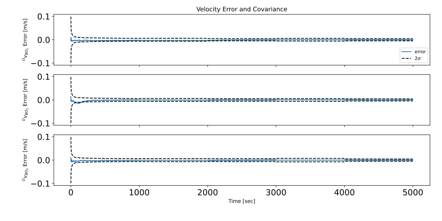

scenarioSmallBodyNav¶
Overview¶
This scenario demonstrates how to use the smallBodyNavEKF() for state estimation about a small body. In this example,
Bennu is used. However, any small body could be selected as long as the appropriate gravitational parameter is set.
In this scenario, Module: simpleNav and Module: planetEphemeris provide measurements to the EKF in the form of NavTransMsgPayload, NavAttMsgPayload, and EphemerisMsgPayload input messages. The EKF takes in these measurements at each timestep and updates the state estimate, outputting this state estimate in its own standalone message, a SmallBodyNavMsgPayload, as well as navigation output messages - NavTransMsgPayload and EphemerisMsgPayload.
Note
This module is only meant to provide a somewhat representative autonomous small body proximity operations navigation solution for POMDP solvers. Therefore, realistic measurement modules do not exist to support this module, and not every source of uncertainty in the problem is an estimated parameter.
Attention
To see the asteroid Bennu in Vizard the asteroid asset bundle must be installed. See the Vizard Download web page.
The relative position estimate and the estimation error and covariance may be found in the plots below.
Likewise, the relative velocity estimate and the estimation error and covariance may be found in the plots below.
- In the next four plots, the attitude and rate estimates and error plots of the small body frame with respect to the
inertial frame are displayed.
The script is found in the folder basilisk/examples and executed by using:
python3 scenarioSmallBodyNav.py
- scenarioSmallBodyNav.plot_ast_attitude_error(time, sigma_err, P)[source]¶
Plot the asteroid attitude estimation error and associated covariance.
- scenarioSmallBodyNav.plot_ast_rate_error(time, omega_err, P)[source]¶
Plot the asteroid rate estimation error and associated covariance.
- scenarioSmallBodyNav.plot_pos_error(time, r_err, P)[source]¶
Plot the position estimation error and associated covariance.
- scenarioSmallBodyNav.plot_position(time, meas_time, r_BO_O_truth, r_BO_O_est, r_BO_O_meas)[source]¶
Plot the relative position result.
- scenarioSmallBodyNav.plot_vel_error(time, v_err, P)[source]¶
Plot the position estimation error and associated covariance.